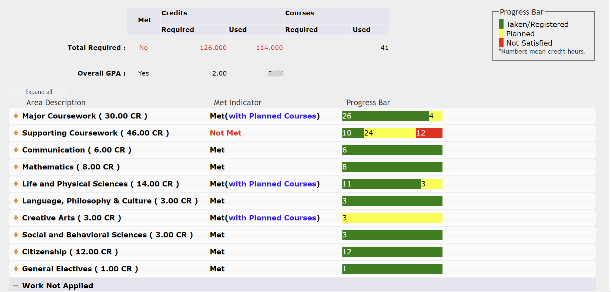
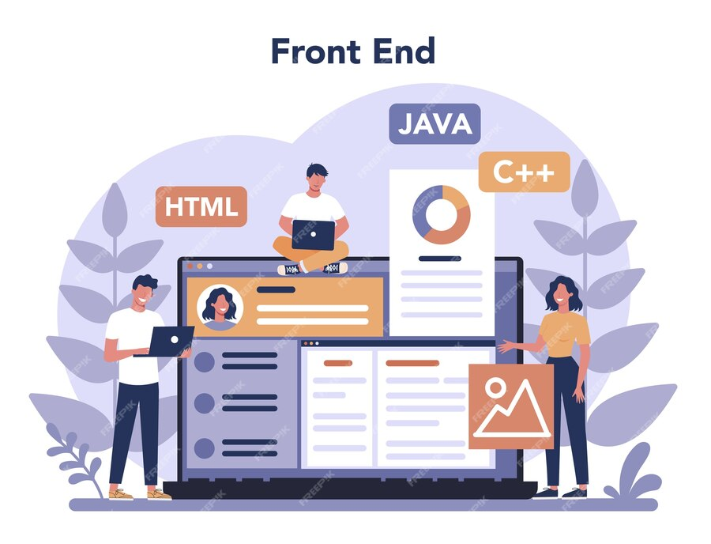

TIDAL Datathon
I participated in the TIDAL Datathon during my sophomore year, and we attempted to create an improvement for
the Degree Planner in Howdy. If we had had unlimited time and resources, our team's overall goal was to
utilize the engineering undergraduate degree plans through A&M and the student's desired GPA to create a
timeline of classes for the student to register for, based on their desired level of rigor.
My team was very inexperienced, so of course we bit off way more than we could chew. I ended up learning how
to webscrap and used the HTML from the Course Catalogs
to attempt to gather information about the program requirements for each engineering degree.

Future Projects
With the introduction of HTML, I think I would like to try a role in front-end development. I have done back-end
development since starting out in coding, and yet every time there is a project that involves visual aspects, I
am always incredibly excited to mess around with the design of everything. After the completion of this project,
I will reaccess my interest in front-end development again.
If front-end development is not in the cards for me, I have also always been interested in taking classes involving
artificial intelligence or machine learning. Both subjects interest me, along with smart-technology and other applications
for technology in the work field. Additionally, I shadowed the Information Security department at Mary Kay and was
very intrigued by the processes in cybersecurity as well. All in all, I really enjoy getting to learn about
different areas in computer science/technology and will continue to learn as much as I can!